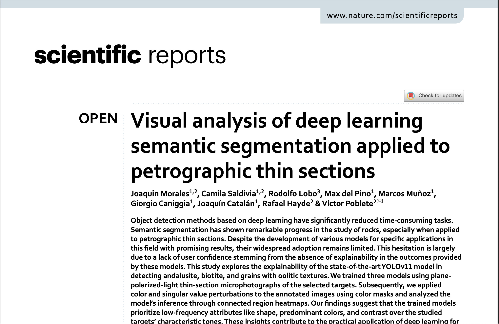
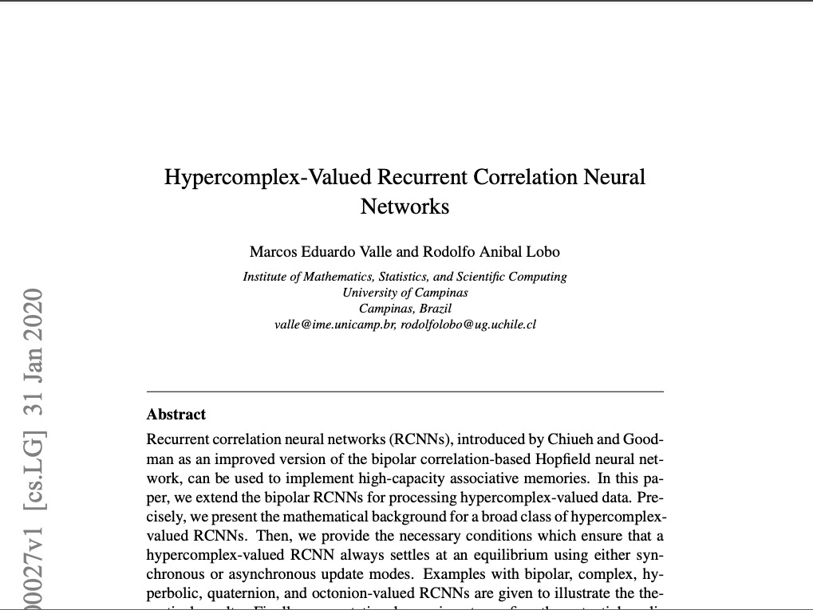

I am a Ph.D in applied mathematics from the University of Campinas, Brazil. My research interests include computational intelligence and biomathematics. During these days I'm conducting research on hypercomplex-valued neural network models, and machine learning applications in signals and control problems.
Currently, I am working at the IT and software development company Globant as a Data Scientist (more than 5 years). I have experienced with NLP and audio applications using machine learning and deep learning models. Besides, I teach, lead and collaborate with different reasearch teams from Chile and Brasil.
Deep learning and AI training for a team of engineers as part of a CORFO projects. Solving time series problems related to energy management and fatigue classification. Data analysis using Python, TensorFlow models for regression tasks, and the Microsoft BatteryML framework as the main laboratory for exploratory analysis with external datasets.
Developed generative AI solutions for code fixing, focusing on improving prompting techniques, enhancing code editing features, and enabling the agent to use Docker environments for test execution. Adding new features to code agent (skills, plan mode, etc.). Created key metrics and implemented statistical analysis, allowing the team to identify weaknesses and strengths in code bug solutions. These improvements contributed to achieving state-of-the-art (SOTA) results in SWE Benchmark Lite and Multimodal.
Tools: SWE-Benchmark, Autogen, Docker, tree-sitter, Claude, GPT, prompting, Agents.
Designed a chat system for converting natural language into SQL queries, enabling seamless interactions with databases. This solution became a key project within the company. It involved designing the logic for generating SQL queries, integrating backend technologies like Python, Tenacity, regex, Pydantic, and OpenAI APIs for data flow and testing.
Designed and implemented backend for Real-Time Avatar-GPT using Azure Cognitive Services, gRPC, and socket.io. Developed audio-viseme streaming for avatar integration and benchmark analysis using Azure OpenAI API.
Developed a PoC for a smart parser using gRPC-Docker-Python architecture integrated with OpenAI API, LangChain, and Pydantic. Worked with Azure No-SQL database for data interaction.
Developed a PoC for a voice-bot integrating speech-to-text, text-to-speech, and ChatGPT via OpenAI API, utilizing gRPC-Docker-Python architecture.
Spearheaded internal AI initiatives including emotion recognition systems, MOOC recommendation engines using transformers, and fine-tuning models for search and speech-to-text in Spanish and Guaraní. Created a webpage creator app leveraging ChatGPT and Stable Diffusion.
Supervised a thesis project focused on classifying cough sounds using machine learning techniques, contributing to the development of a model capable of distinguishing between healthy and symptomatic coughs. Guided the integration of the COUGHVID dataset and assisted in the implementation of preprocessing pipelines and feature extraction methods.
View ProjectDelivered a comprehensive course on deep learning fundamentals, covering topics such as neural networks, backpropagation, and optimization techniques. Utilized frameworks like TensorFlow and PyTorch for hands-on learning. Designed and implemented practical assignments and projects to reinforce theoretical concepts.
Developed and taught a specialized course on machine learning applications in audio processing for sound engineering students. Covered topics including audio feature extraction, classification models, and real-time audio analysis. Integrated industry-standard tools and datasets to bridge academia and industry practices.

Morales, J., Saldivia, C., Lobo, R., et al. (2025)

Lobo, R. A., et al. (2024)

Valle, M. E., & Lobo, R. A. (2020)

Valle, M. E., & Lobo, R. A. (2020)

Lobo, R. A., & Valle, M. E. (2020)

Lobo, R. A., Palma, J. M., Morais, C. F., Carvalho, L. D. P., Valle, M. E., & Oliveira, C. R. (2019, November)

Barros, L. C., Sanchez, D., Lobo, R., & Esmi, E. (2019, August)

Sánchez, D. E., Palma, J. M., Lobo, R. A., Meyer, J. F., Morais, C. F., Rojas-Palma, A., & Oliveira, R. C. (2019, November)

Morillo, C. C. E., Carrasco, R. A. L., & da Costa Meyer, J. F. (2018)
University of Campinas, Brazil
CAPES Scholarship recipient and Best Doctoral Thesis award
Austral University of Chile
Highest Distinction Degree
University of Chile
Distinction Degree